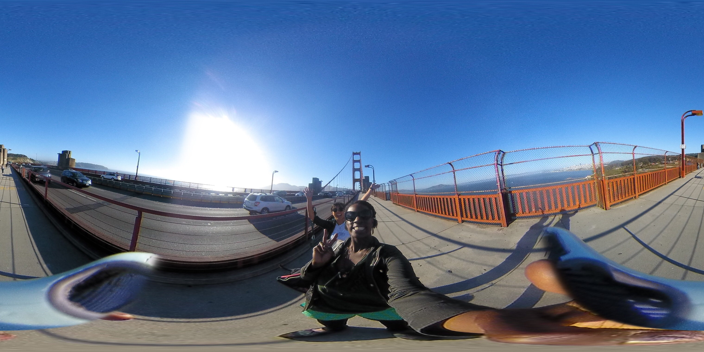

<!DOCTYPE html>
<html><body>
<script src="https://aframe.io/releases/0.3.0/aframe.min.js"></script>
<script src="https://cdn.rawgit.com/AltspaceVR/AltspaceSDK/v2.0.2/dist/altspace.min.js"></script>

<!-- set up the scene -->
<a-scene altspace='vertical-align: bottom;'>

    <!-- preload all our textures -->
    <a-assets>
        <!-- gettign rid of possibly too big file 
         -->
        
    </a-assets>

    <!-- add the moon to the scene -->
    <a-sphere position='0 1.5 -10' material='shader: flat; color: #696969; roughness: 1'>
        <!-- add an animation to make it rotate -->
        <a-animation to='0 360 0' easing='linear' dur='20000' repeat='indefinite'/>
    </a-sphere>

    <!-- add the backdrop of stars -->
    <a-sky src='#background' radius='2500'></a-sky>

    <!-- add a view camera (2d only) -->
    <a-entity position='0 0 2'>
        <a-camera></a-camera>
    </a-entity>

</a-scene>

</body></html>
